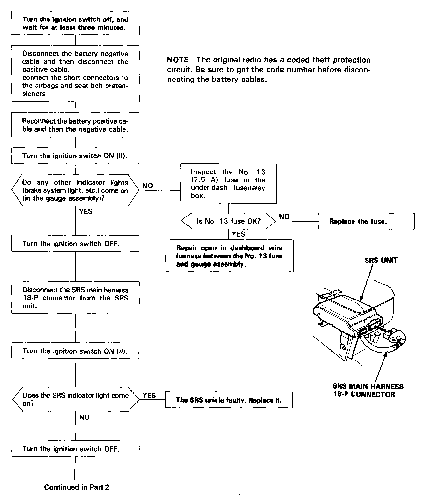
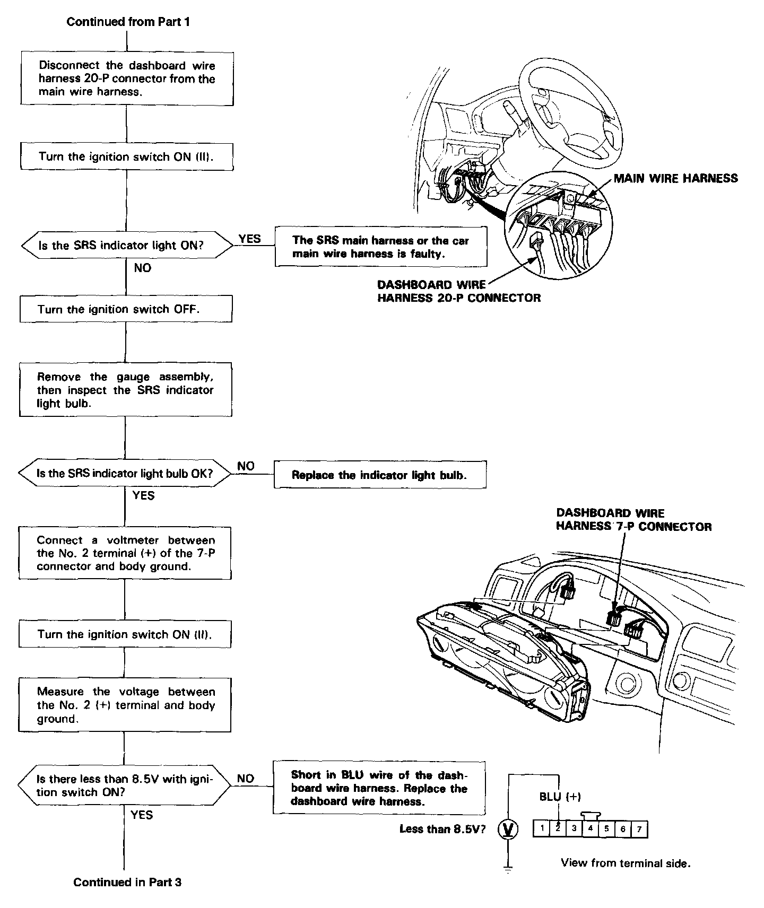
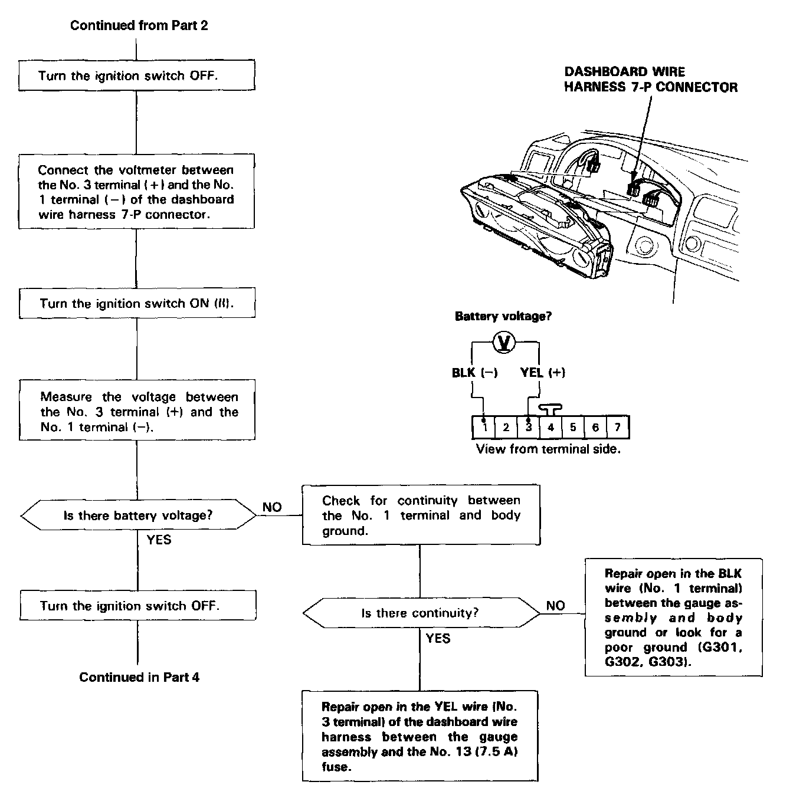
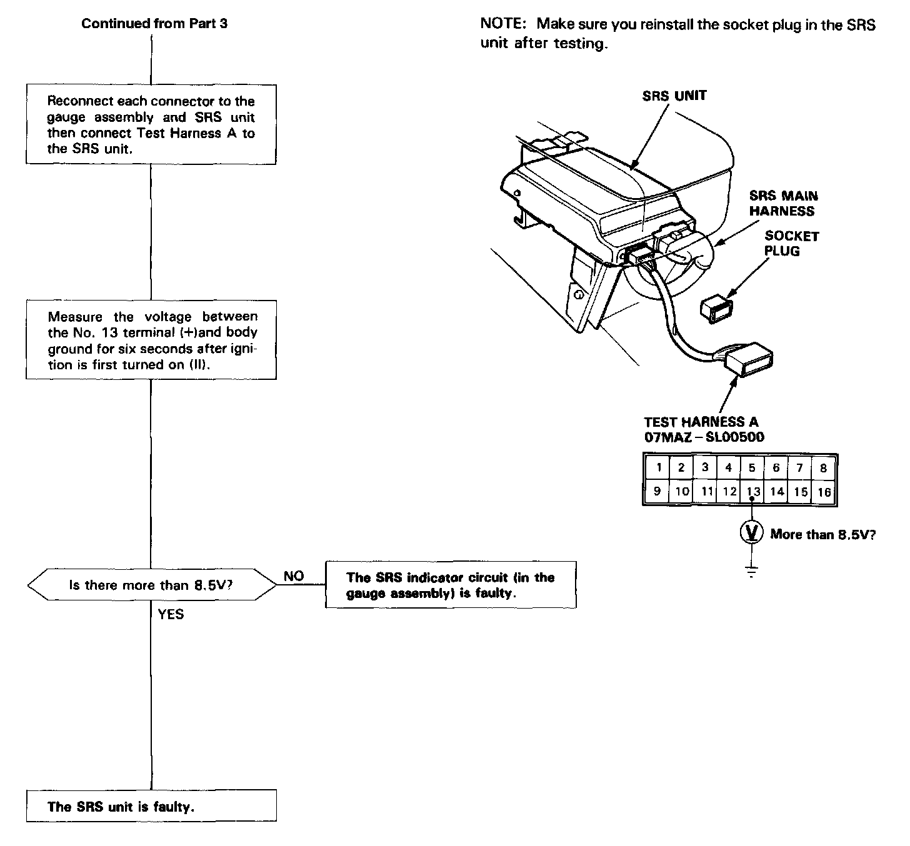

Indicator Does Not Light
The SRS Indicator Does Not Light
CAUTION:
- Use only a digital multimeter use only a digital multimeter to check the system.
NOTE: Before troubleshooting, make sure that battery voltage is 12 V or more. Otherwise you'll obtain wrong test readings.
SRS Indicator Does Not Light - Part 1:

SRS Indicator Does Not Light - Part 2:

SRS Indicator Does Not Light - Part 3:

SRS Indicator Does Not Light - Part 4:

NOTE: Make sure you reinstall the socket plug in the SRS unit after testing.